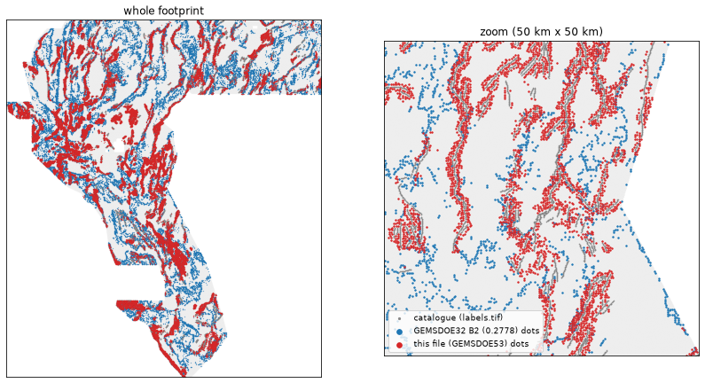
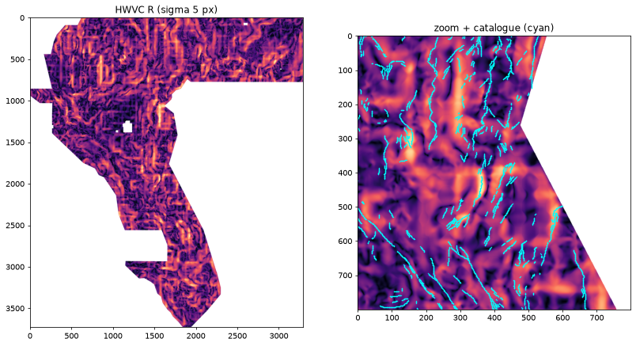

Submission status, 2026-10-09: no file is OK to submit
DO NOT SUBMIT — valid format, but DUPLICATE under the pre-registered uniqueness gate v2 (27 registry rows, max kappa 1.00).
What was built. E3 of 2026-10-09: the current holdout-best model (H1 lane: HGB on the 19 official bands plus the segment-exact distance to visible catalogue faults), decoded by D-S: 40,000 dots, minimum spacing 2.8 px, nothing within 2 px of a mapped fault. HOLDOUT-DTI (segment folds, dti v1.0.0, 60,988 withheld positives) of that pipeline: 0.1166, 95% CI [0.1081, 0.1253]. That number is a proxy, not an organizer score.
Why it must not be submitted. Pre-registered gate v2 (overlap above 0.70 within 3 px AND kappa above 0.40) flags 27 registry rows. Examples: our own 2026-10-08 file (overlap 1.000, kappa 1.000), GEMSDOE37 physics-dotted-80k (0.892 / 0.852), 12GEMSDOE NMS traces (0.872 / 0.816), GEMSDOE43 sup01-hgb21-n40000 (0.812 / 0.769) and GEMSDOE44-primary (0.733 / 0.683). The raster is a fresh build and byte-unique, but its dot placement is not distinguishable from earlier public submissions under the user's protocol.
Expected score: not projected. It was not expected to beat 0.2778: its dots sit near the catalogue (median 5 px versus 19.65 px for the 0.2778 file), and the lineage algebra says such dots earn little credit.
The file's format is valid. It has no NaN anywhere, values are exactly 0 or 1, and the grid matches the sample. It fails only the
uniqueness gate. It is kept for research, renamed with DO-NOT-SUBMIT:
gems53-h1ds-n40000-20261009-c468977c-zeros__DO-NOT-SUBMIT.tif (143,771 bytes, sha256 1101b655fbc33152…).
Unique name: gems53-h1ds-n40000-20261009-c468977c-zeros. Note: GEMSDOE53 E3: H1 HGB (19 bands+seg-exact fault dist), 40k dots sep2.8 px, >2 px off catalogue. HOLDOUT-DTI 0.117 (DS). Unscored. (128 chars).
What would pass next time. Build a B2-regime file (median at least 15 px from the catalogue; flank of 3 px or more) from a model trained WITHOUT catalogue-distance features, for example catalogue-free HWVC on spatial blocks. Run the dot-overlap gate on the score surface's top-K BEFORE placement, using a fast subset of the 27 rasters above.
Every older file in docs/downloads/ and submissions/ is also not OK to submit. Reasons: NaN outside the footprint (the layout that returned
“Predicted values must be in range [0, 1]”), a failed uniqueness gate (the 2026-10-08 candidate), or both.
Format validation (the bytes you download)
| Check | Result |
|---|---|
| single_band | PASS |
| dtype_float32 | PASS |
| crs_epsg_32611 | PASS |
| shape_matches_sample | PASS |
| transform_matches_sample | PASS |
| resolution_100m | PASS |
| no_nan_anywhere | PASS |
| no_inf | PASS |
| no_nan_inside_footprint | PASS |
| values_in_0_1 | PASS |
| outside_footprint_all_zero | PASS |
| nodata_unset | PASS |
template scripts/validate_submission.py | exit 1; failures: - 7111787 px outside the template's valid region are finite; - Nodata tag None != template's 'nan'. The organizer-accepted 0.2778 file gives exit 1 with identical failures (IR-53-51). |
template validate-conformant (requires NaN outside; expected to differ) | exit 1 — same check on the organizer-accepted 0.2778 zeros file: exit 1 |
Dots: 40,000; dots outside footprint: 0; min distance to a catalogue fault: 2.83 px.
Uniqueness (gate v2, pre-registered, chance-corrected) — verdict: DUPLICATE under v2
Compared with 605 unique on-grid rasters from every public GEMSDOE* repository (files seen 1222, skipped 23).
Duplicate if more than 70% of our dots are within 3 px of a raster's dots and kappa is above 0.40, or if |Spearman rho| is above 0.90.
Highest rho of our pre-placement surface: 0.5832 (5GEMSDOE__data__derived__context_detector_prob_4fold_base.ti). Highest rho of the final raster: 0.4741.
The raw, uncorrected rule (more than 70% within 3 px, no chance correction) flags 97 rasters. The chance-corrected rule flags the 27 rows below, so verdict = DUPLICATE under v2. Full receipt: evidence/h53_gate_v2_e3_armA_ds40000.json.
| Duplicate under v2 (registry raster) | mode | overlap ≤3 px | chance | kappa |
|---|---|---|---|---|
| GEMSDOE53__docs__submissions__gems53-h1-thin_bin_q0p1-20261008-aefc7582.tif | positive | 1.000 | 0.204 | 1.000 |
| GEMSDOE37__docs__downloads__gemsdoe37-h6-physics-dotted-80k-20261005T055000Z-0bef921 | positive | 0.892 | 0.266 | 0.852 |
| 12GEMSDOE__docs__downloads__12GEMSDOE_r5-nms3-trace_055e9aac96b8.tif | positive | 0.872 | 0.306 | 0.816 |
| 12GEMSDOE__docs__downloads__12GEMSDOE_r5-nms3-trace_055e9aac96b8_allfinite.tif | positive | 0.872 | 0.306 | 0.816 |
| 12GEMSDOE__docs__downloads__12GEMSDOE_r6-nms3-h28-texture_8721329b55c7.tif | positive | 0.872 | 0.307 | 0.815 |
| 12GEMSDOE__docs__downloads__12GEMSDOE_r6-nms3-h28-texture_8721329b55c7_allfinite.tif | positive | 0.872 | 0.307 | 0.815 |
| GEMSDOE3__docs__downloads__coverage-v3-wide-20260925T054019Z-0ac095a7ed.tif | topk | 0.921 | 0.614 | 0.795 |
| 12GEMSDOE__docs__downloads__12GEMSDOE_r7-nms3-dem10-scarp_0c9199f14e62.tif | positive | 0.850 | 0.322 | 0.778 |
| 12GEMSDOE__docs__downloads__12GEMSDOE_r7-nms3-dem10-scarp_0c9199f14e62_allfinite.tif | positive | 0.850 | 0.322 | 0.778 |
| GEMSDOE43__docs__downloads__gems43-sup01-hgb21-sep40-n40000-20261006-bc2e4e9a8d6f-na | positive | 0.812 | 0.187 | 0.769 |
| GEMSDOE43__docs__downloads__gems43-sup01-hgb21-sep40-n40000-20261006-bc2e4e9a8d6f-ze | positive | 0.812 | 0.187 | 0.769 |
| GEMSDOE44__docs__downloads__gemsdoe44-primary.tif | positive | 0.733 | 0.158 | 0.683 |
| GEMSDOE45__docs__downloads__gems45-phase-parity-20261006-362e1338f293-research.tif | positive | 0.731 | 0.236 | 0.648 |
| GEMSDOE10__docs__downloads__gems10-h25-ctx-ridge-20260927T232947704150Z-6452ae1d00.t | positive | 0.732 | 0.263 | 0.636 |
| 13GEMSDOE__docs__downloads__archive__13gems-r6-ensemble-20260929T182914Z.tif | topk | 0.853 | 0.646 | 0.586 |
| 13GEMSDOE__docs__downloads__archive__13gems-r6-ensemble-20260929T182914Z_allfinite.t | topk | 0.853 | 0.646 | 0.586 |
| GEMSDOE3__docs__downloads__riftline-context-distance-20260925T011817Z-7b6010637a.tif | topk | 0.746 | 0.394 | 0.581 |
| GEMSDOE22__docs__downloads__gems22-h23-b-dti-optimal-emission-10pct-20261002-8617669 | topk | 0.801 | 0.534 | 0.572 |
| GEMSDOE22__docs__downloads__gems22-h23-b-dti-optimal-emission-10pct-20261002-8617669 | topk | 0.801 | 0.534 | 0.572 |
| 13GEMSDOE__docs__downloads__archive__13gems-composite-plus-20260929T183249Z.tif | topk | 0.924 | 0.835 | 0.538 |
| 13GEMSDOE__docs__downloads__archive__13gems-composite-plus-20260929T183249Z_allfinit | topk | 0.924 | 0.835 | 0.538 |
| GEMSDOE22__docs__downloads__gems22-h23-a-dti-optimal-emission-6pct-20261002-e2ec4b49 | topk | 0.720 | 0.413 | 0.522 |
| GEMSDOE22__docs__downloads__gems22-h23-a-dti-optimal-emission-6pct-20261002-e2ec4b49 | topk | 0.720 | 0.413 | 0.522 |
| 13GEMSDOE__docs__downloads__archive__13gems-r8-ensemble-20260930T014614Z.tif | topk | 0.881 | 0.759 | 0.507 |
| 13GEMSDOE__docs__downloads__archive__13gems-r8-ensemble-20260930T014614Z.zip__13gems | topk | 0.881 | 0.759 | 0.507 |
| 13GEMSDOE__docs__downloads__archive__13gems-composite-20260928T040920Z.tif | topk | 0.846 | 0.724 | 0.441 |
| 13GEMSDOE__docs__downloads__archive__13gems-composite-20260928T040920Z.zip__13gems-c | topk | 0.846 | 0.724 | 0.441 |
Reading: our dots hug the existing catalogue (median 5 px). Many earlier lanes put dots on the same structures, including supervised HGB (GEMSDOE43), NMS ridge traces (12GEMSDOE), physics-only dots (GEMSDOE37) and our own 2026-10-08 file. A model that uses catalogue distance as a feature lands on these consensus sleeves. The organizer-scored 0.2778 file avoids them (median 19.65 px).

Why the GEMSDOE 0.2778 file scored highest (measured)
The 0.2778 file (GEMSDOE32 H33-2-B2) is exactly the 0.2600 d2.8 dot file with every dot within 2 px of the existing catalogue removed. The set relations are measured: B2 ⊂ r1 ⊂ d2.8. No new dots were added in either step. The test set holds expert-labelled faults that are not in the USGS database, so dots on the catalogue are almost pure false positives.
| file | user-reported score | dots | ≤1 px from catalogue | ≤2 px | ≤3 px |
|---|---|---|---|---|---|
| d2.8 | 0.26 | 44,090 | 3,891 | 6,436 | 8,607 |
| r1 | 0.2708 | 40,199 | 0 | 2,545 | 4,716 |
| B2 | 0.2778 | 37,654 | 0 | 0 | 2,171 |
Algebra from the official formula: 1/DTI = 0.2 + (0.2·FPw + 0.8·|G|)/TPw. Removing n pure-false-positive dots implies TPw = 0.2·n/Δ(1/DTI): step 1 gives 5,073.3 and step 2 gives 5,470.2 (per unit public share). The two independent steps agree within 8%. This is an inference, not a score.
This session's experiments (pre-registered, 3 of 3 used)
E1 leakage canary (design B; flag above 0.90): flagged = none. Top features:
| feature | max separability |
|---|---|
| h1_segment_exact_distance(visible only) | 0.7683 |
| hwvc_nmsd_s2 | 0.5997 |
| hwvc_R_s2 | 0.5927 |
| hwvc_R_s5 | 0.5927 |
| band07:Geodetic shear rate | 0.5926 |
| hwvc_nmsd_s5 | 0.5911 |
| band04:Geodetic second invariant | 0.5897 |
| band16:Earthquake intensity or density (n=100km radius, a=15° parameters) | 0.5885 |
E2 hide-and-recover. Arm A = 19 bands + H1 (the previous holdout best, reproduced exactly per fold). Arm B = A + HWVC (hanging-wall vector concordance). Every number below is HOLDOUT-DTI (evaluator gems53.core.dti v1.0.0; 60,988 withheld positives; 95% t-interval, df 4).
| stage | decoder | A pooled | B pooled | B−A mean | 95% CI | B wins |
|---|---|---|---|---|---|---|
| Stage 1 segment folds | M1 thin q0.10 | 0.141319 | 0.139727 | -0.001587 | [-0.003732, +0.000559] | 1/5 |
| Stage 1 segment folds | D-S (flank 2 px, sep 2.8, 40k dots) | 0.116626 | 0.117022 | +0.000400 | [-0.002619, +0.003419] | 3/5 |
| Stage 2 spatial super-regions | M1 thin q0.10 | 0.004049 | 0.004456 | +0.000344 | [-0.000216, +0.000903] | 4/5 |
Promotion rule: promote B iff stage-1 paired (B-A, M1) 95% lower bound > 0 AND stage-2 paired mean > 0 → promote B = False. HWVC is therefore a negative result, and it is kept as a deliverable. E3 built the pre-registered fallback: arm A (the current holdout best model) with the new decoder D-S.

Read more
- Pre-registration (committed before any run)
- Ranked hypotheses, GEMSDOE lineage analysis, leakage audit
- GEMSDOE29 leakage diagnosis (Kaufman et al. 2012 learn-predict separation)
- Run card (JSON) · all evidence · sources · irregularities
- Official: problem description · leaderboard · rules → NLR 96647 PDF